rumi
Stateless raster storage for AI4EO
Rumi is one layer of the Asterisk stack for AI
GeoTIFF permits many layouts

Rumi permits only one container profile

Rumi follows its own data model
Cut, compress your way. Rumi just writes.
Rumi writes an external header for stateless reads
Rumi's file header is predictable
Rumi's external header locates every frame
fixed part, 32 bytes
frame sizes, 26 bytes, 13 bits per frame
+ 92,375 B in every frame, stored once as count_min
Rumi's external header stores sizes, not offsets
An image of shape (, , ) in 256 × 256 tiles
GeoTIFF from GDAL, tiled 256 × 256, interleave band, uint16, ZSTD. External header frame sizes at 16 bits each.
The external header is 7.6× smaller than the GeoTIFF index and 7.1× smaller than Rumi's file header.
On the CPU, frames decode in RAM
rumi.read(path, header, framework="torch")One 256 by 256 tile of Lake Annecy, 4 bands in 4 frames. A local file skips Karu, each worker reads its own range.
On a GPU, compressed bytes cross PCIe
The same tile. A frame the GPU cannot decode is decoded on the CPU and copied.
A Sentinel-2 scene reaches the GPU in 61 ms
One CPU thread and an NVIDIA A100. Red, green and blue of one Sentinel-2 tile, 723 MB, already in memory.
Rumi with PFOR is 26× faster than GeoTIFF and 828× faster than JPEG2000, from a file only 10 % larger than the JPEG2000.
Rumi scales with every GPU you add
def __getitems__(self, indices):
return rumi.read_many(sources, headers, windows=windows, framework="torch", device=f"cuda:{rank}")Five languages, one format
rumi_spec_parse(header, header_size, &spec); rumi_source_file("scene.rumi", &src);
rumi_read(src, spec, NULL, 0, NULL, 0, 256, 256, 512, 256, NULL, chip, sizeof chip);header = open("scene.header", "rb").read()
chip = rumi.read("scene.rumi", header, window=(256, 512, 256, 256))header <- readBin("scene.header", "raw", file.size("scene.header"))
chip <- rumi_read("scene.rumi", header, window = c(257, 513, 256, 256))header = Base.read("scene.header")
chip = Rumi.read("scene.rumi", header; window = (257, 513, 256, 256))const dataset = await openRumi("https://example.com/scene.rumi");
const chip = await dataset.read({window: [256, 512, 256, 256]});